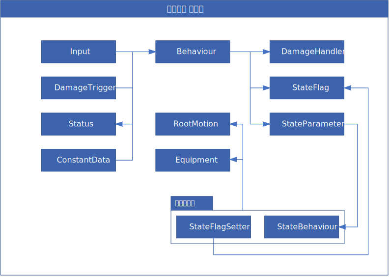

<!--하위 문서 템플릿 버전: 2021-09-26 23:19:03-->
<figure class="image fit" style="max-width: fit-content;">
    
    <figcaption>플레이어 캐릭터 구조 다이어그램</figcaption>
</figure>
<p>플레이어 캐릭터는 돗가비 프로젝트의 핵심적인 중추 중 하나로, 복잡한 인터렉션과 데이터들을 처리하고 관리하기 위해 여러
    컴포넌트 및 클래스로 나뉘어져 구현되어 있습니다.</p>
<a href="./#subdoc" class="button"><i class="fas fa-arrow-left"></i> 프로젝트 소개로 돌아가기</a>